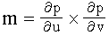
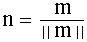

title: glEvalCoord2dv function (Gl.h) description: The glEvalCoord2dv function evaluates enabled two-dimensional maps. ms.assetid: 726a0c0c-d69e-46dc-b78e-a0d1e9ad97cd keywords:
The glEvalCoord2dv function evaluates enabled two-dimensional maps.
void WINAPI glEvalCoord2dv(
const GLdouble *u
);
u
A pointer to an array containing the domain coordinate u.
This function does not return a value.
The glEvalCoord2dv function evaluates enabled two-dimensional maps using two domain values, u and v. Define maps with glMap1. Enable or disable them with glEnable and glDisable.
When one of the glEvalCoord functions is issued, all currently enabled maps of the indicated dimension are evaluated. Then, for each enabled map, it is as if the corresponding OpenGL function were issued with the computed value. That is, if GL_MAP1_INDEX or GL_MAP2_INDEX is enabled, a glIndex function is simulated. If GL_MAP1_COLOR_4 or GL_MAP2_COLOR_4 is enabled, a glcolor function is simulated. If GL_MAP1_NORMAL or GL_MAP2_NORMAL is enabled, a normal vector is produced, and if any of GL_MAP1_TEXTURE_COORD_1, GL_MAP1_TEXTURE_COORD_2, GL_MAP1_TEXTURE_COORD_3, GL_MAP1_TEXTURE_COORD_4, GL_MAP2_TEXTURE_COORD_1, GL_MAP2_TEXTURE_COORD_2, GL_MAP2_TEXTURE_COORD_3, and GL_MAP2_TEXTURE_COORD_4 is enabled, then an appropriate glTexCoord function is simulated.
OpenGL uses evaluated values instead of current values for those evaluations that are enabled, and current values otherwise, for color, color index, normal, and texture coordinates. However, the evaluated values do not update the current values. Thus, if glVertex functions are interspersed with glEvalCoord functions, the color, normal, and texture coordinates associated with the glVertex functions are not affected by the values generated by the glEvalCoord functions, but only by the most recent glColor, glIndex, glNormal, and glTexCoord functions.
If automatic normal generation is enabled, glEvalCoord2dv calls glEnable with argument GL_AUTO_NORMAL to generate surface normals analytically, regardless of the contents or enabling of the GL_MAP2_NORMAL map. Let

The generated normal n is

The following functions retrieve information related to the glEvalCoord2dv function:
glIsEnabled with argument GL_MAP1_VERTEX_3
glIsEnabled with argument GL_MAP1_VERTEX_4
glIsEnabled with argument GL_MAP1_INDEX
glIsEnabled with argument GL_MAP1_COLOR_4
glIsEnabled with argument GL_MAP1_NORMAL
glIsEnabled with argument GL_MAP1_TEXTURE_COORD_1
glIsEnabled with argument GL_MAP1_TEXTURE_COORD_2
glIsEnabled with argument GL_MAP1_TEXTURE_COORD_3
glIsEnabled with argument GL_MAP1_TEXTURE_COORD_4
glIsEnabled with argument GL_MAP2_VERTEX_3
glIsEnabled with argument GL_MAP2_VERTEX_4
glIsEnabled with argument GL_MAP2_INDEX
glIsEnabled with argument GL_MAP2_COLOR_4
glIsEnabled with argument GL_MAP2_NORMAL
glIsEnabled with argument GL_MAP2_TEXTURE_COORD_1
glIsEnabled with argument GL_MAP2_TEXTURE_COORD_2
glIsEnabled with argument GL_MAP2_TEXTURE_COORD_3
glIsEnabled with argument GL_MAP2_TEXTURE_COORD_4
glIsEnabled with argument GL_AUTO_NORMAL
| Requirement | Value |
|---|---|
| Minimum supported client | Windows 2000 Professional [desktop apps only] |
| Minimum supported server | Windows 2000 Server [desktop apps only] |
| Header | Gl.h |
| Library | Opengl32.lib |
| DLL | Opengl32.dll |